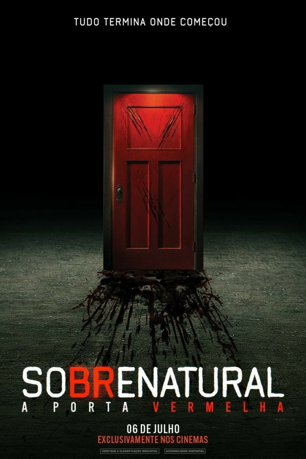

A Morte do Demônio: A Ascensão
Duas irmãs distantes cujo reencontro é interrompido por demônios devoradores de carne que aparecem de repente,
levando-as a uma batalha primal pela sobrevivência, enfrentando a versão mais assustadora que se possa imaginar de uma família.

Sobrenatural: A Porta Vermelha
Josh Lambert segue para o leste para deixar seu filho, Dalton, na faculdade.
Mas demônios reprimidos do passado voltam repentinamente para assombrar os dois.

O Exorcista do Papa
O padre Gabriele Amorth, exorcista do Vaticano, luta contra Satanás e demônios possuidores de inocentes.
Um retrato detalhado de um padre que realizou mais de 100 mil exorcismos em sua vida.

Pânico VI
Sam, Tara, Chad e Mindy, os quatro sobreviventes do massacre realizado pelo Ghostface, decidem deixar Woodsboro para trás em busca de um novo começo em uma cidade diferente.
Mas não demora muito para eles se tornarem alvo de um novo serial killer mascarado.